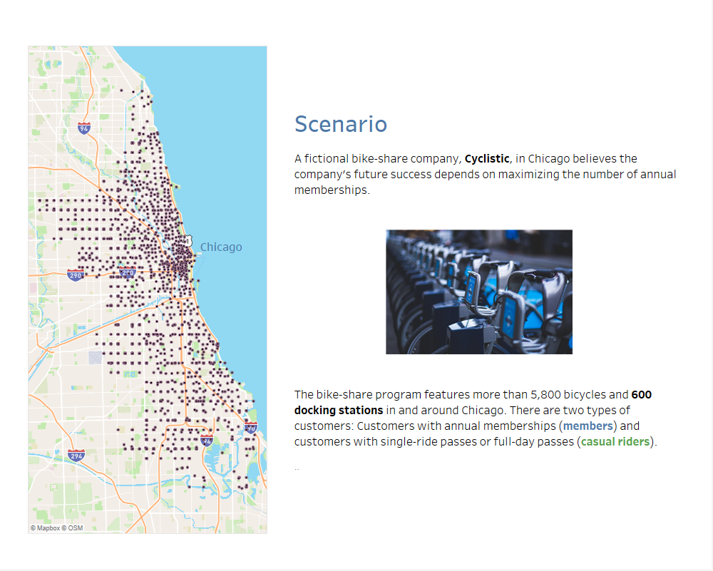

To answer the business question, we will follow the data analysis
process: ask, prepare, process, analyze, share, and
act.
Three questions will guide the marketing program:
The marketing director has assigned me to answer the first
question?
How do annual members and casual riders use Cyclistic bikes differently?
For the data analysis we will use trip data from previous 12 months
from this source.
(Note: The data has been made available by Motivate Inernational
Inc. under this license.)
a) Choose the right tools:
The use of spreadsheets can be ruled out due to the large data size, leaving us with SQL or R as best choices.
Project 1:
- Excel (Pivot and Graphs): For an ad-hoc analysis with a
single sample file.
- SQL Server Management Studio: For data import and
cleaning
- Tableau desktop: for data exploration, visualization, and
reporting
Project 2:
- R: RStudio/ RMarkdown: for a more in-depth analysis and for
reporting
- GitHub: reporting and code sharing
b) Data integrity
Data integrity is to ensure that the data sample is sufficient, has
no bias, represents the population, is accurate and trustworthy.
In this project the data sample represents the total population of one
year, is therefore not biased, and the data are from first party.
c) Cleaning the data
The provided raw data are already in relative clean condition.
Nevertheless, the following cleaning steps are still required:
In the analysis process the cleaned dataset is aggregated in various
ways to answer questions about trends per year, week, day, bike type and
location. The results are summarized in visualization.
Recommendations are stated in each report.
Additional information from Chicago Bike Share Program “DIVVY”
Source: DIVVY webpage (as of Mar 2023): Link
From the website the pricing program is as follows:
Lost or stolen bike fee is $1200.
In order to avoid extra per minute fees it is recommended to change
the bike or to lock and unlock it again. In case of:
From the pricing program the following user behavior is
expected: